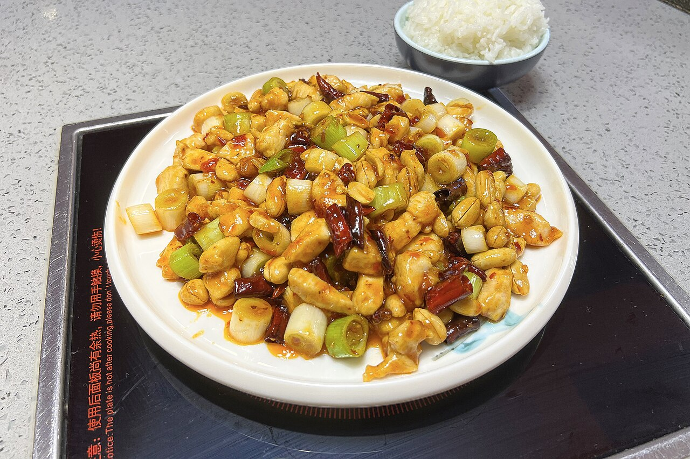
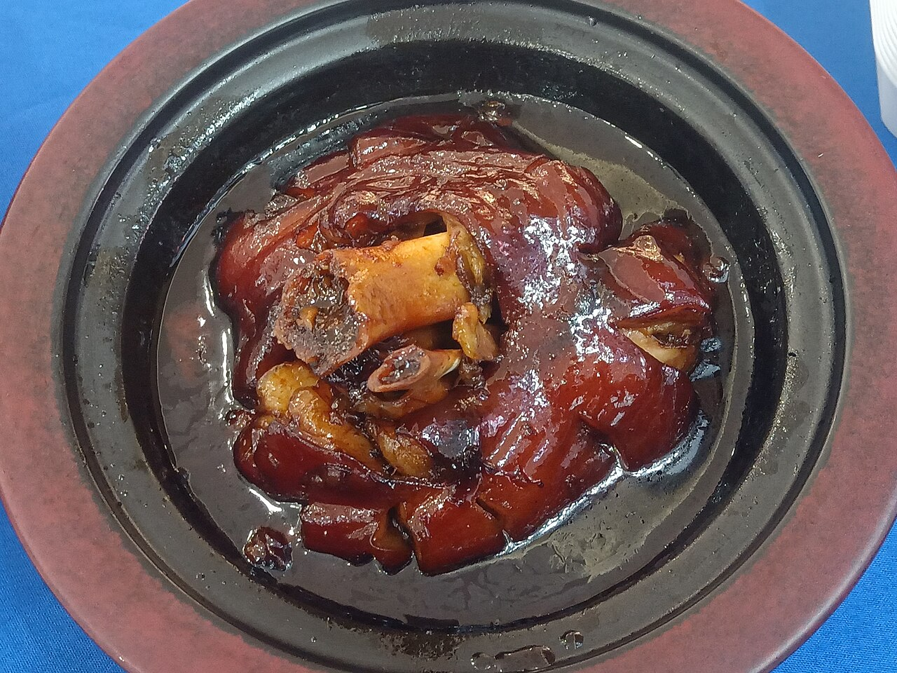
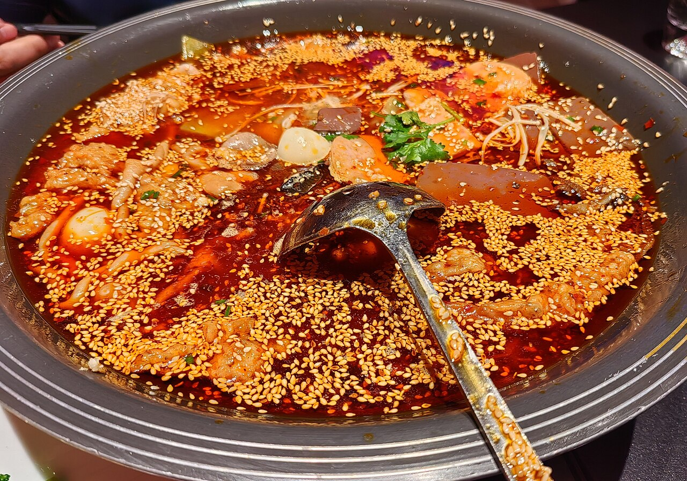
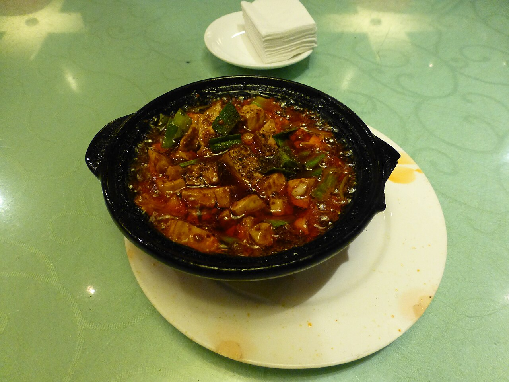
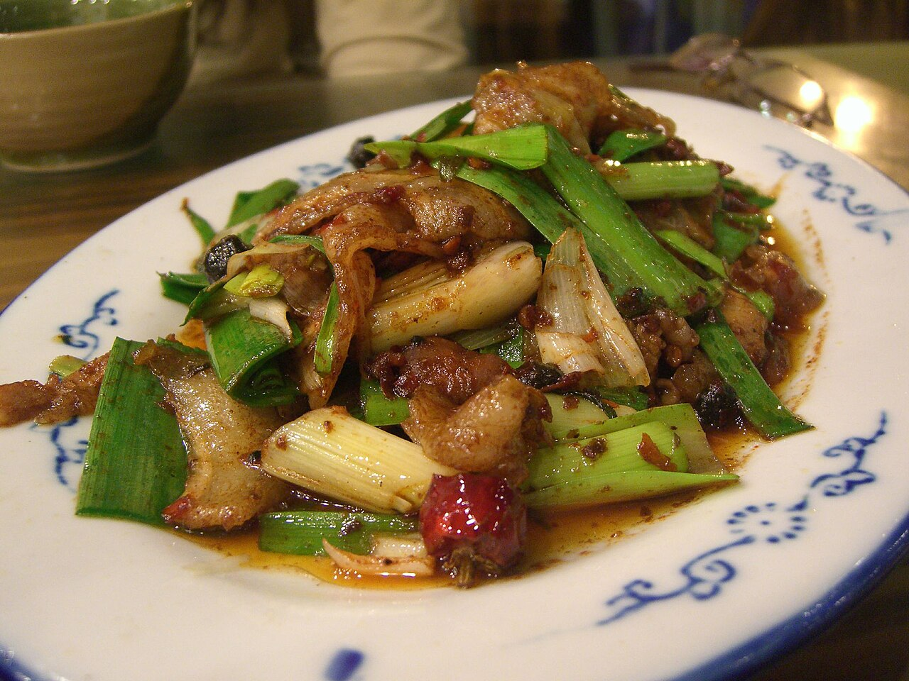

宫保鸡丁Gongbao Jiding
鸡肉丁配花生米、干辣椒与葱段急火翻炒,讲究"糊辣荔枝口":入口先辣后甜, 鸡肉滑嫩、花生酥脆。相传得名于清代四川总督丁宝桢,是走向世界的川菜代表。

川菜发源于巴蜀之地,以成都、重庆为中心,讲究"一菜一格,百菜百味"。它并不只有辣: 麻辣、鱼香、荔枝、糖醋、咸鲜……味型多达二十余种;豆瓣、花椒、泡椒与红油, 则是川菜厨房里最熟悉的四张面孔。2010 年,成都被联合国教科文组织授予"美食之都"称号。

鸡肉丁配花生米、干辣椒与葱段急火翻炒,讲究"糊辣荔枝口":入口先辣后甜, 鸡肉滑嫩、花生酥脆。相传得名于清代四川总督丁宝桢,是走向世界的川菜代表。

眉山名菜,以猪肘加绍酒慢火煨至酥烂,汤白肉糯、肥而不腻。相传与苏东坡 在黄州炖肉的轶事一脉相承,是川菜中少见的"温柔"大菜,2013 年获国家地理标志保护。

源自重庆的江湖菜:鸭血与毛肚、黄喉在滚沸的红油汤里"现烫现吃",麻辣滚烫、 酣畅淋漓,被视为渝派江湖菜的鼻祖之一,已列入《渝菜烹饪标准体系》。

成都百年名菜:豆腐嫩烫、牛肉酥香,麻、辣、烫、嫩、酥、鲜俱全, 花椒面与豆瓣红油成就"麻婆"招牌,是享誉世界的川菜名片。

川菜"过门香":二刀肉煮后回锅煸炒,肉片卷成灯盏窝,豆瓣蒜苗一炒, 咸鲜微辣、油润回甜,是四川家常的头号下饭菜。
* 每个菜品的三级页面右侧附一种中华烹饪工艺的介绍;二十四工艺详见各页面。